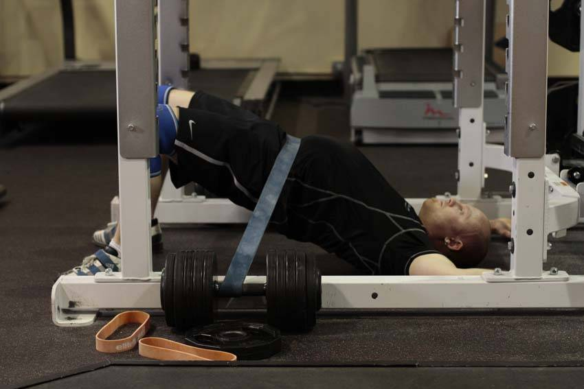

- After choosing a suitable band, lay down in the middle of the rack, after securing the band on either side of you. If your rack doesn't have pegs, the band can be secured using heavy dumbbells or similar objects, just ensure they won't move.
- Adjust your position so that the band is directly over your hips. Bend your knees and place your feet flat on the floor. Your hands can be on the floor or holding the band in position.
- Keeping your shoulders on the ground, drive through your heels to raise your hips, pushing into the band as high as you can.
- Pause at the top of the motion, and return to the starting position.
This exercise appears in Programmd training programs. Take the quiz to find one for your gym.
Find your program